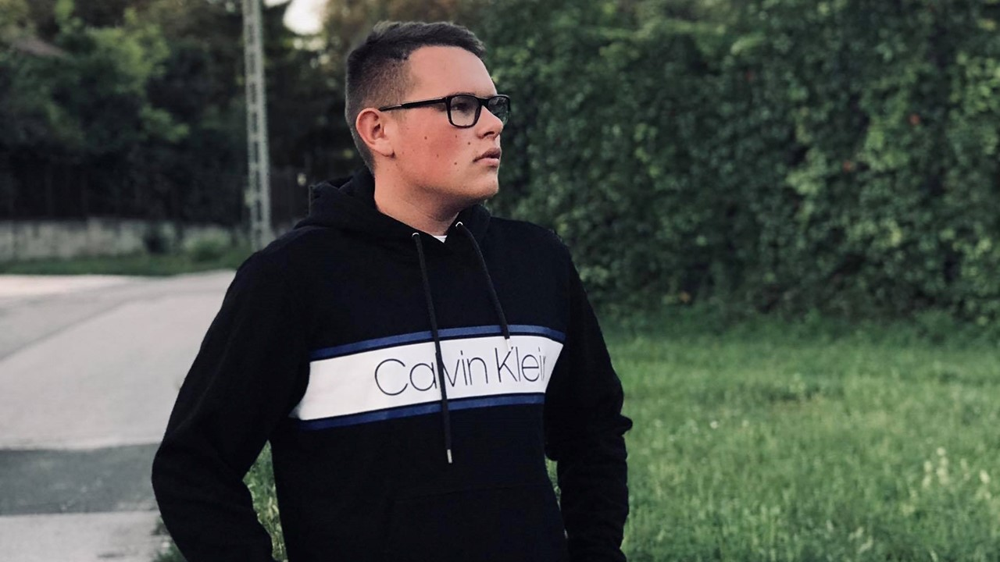

Rólam
Sziasztok Evinger Bónó-nak hívnak 20 éves vagyok, Budapesten élek és jelenleg szoftverfejlesztést és tesztelést tanulok a SZÁMALK - Szalézi Technikum és Szakgimnáziumba. Már vannak korábi tapsztalataim szoftverfejlesztésel kapcsolatban, valamitn rendelkezem érettségivel és beszélek angolul meg alapszinten spanyolul. Kedvenc időtöltéseim tenisz, amit 6-éves korom óta csinálok, síelés minden télen járunk a családdal és barátokkal síelni, videójáték legfőképpen fps játékokkal szoktam játszani, zenehallgatás mindenfajta zenét meghallgatok, de a kedvencem a techno és a rap zene, valamint szeretek bulizni járni a barátaimmal